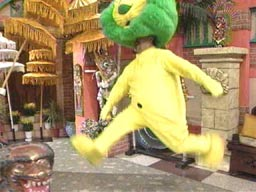

|
■2003/09/24/(Wed)10:54
地震
|

あんなに、準備万端どんとこーい！って待機してたのに、地震が来たこと全然知らんかった…。たぶん自転車乗ってる時に揺れがあったと思うんだけど…。
彼氏が「すげー揺れた！もうあの地震のウワサはホントだ！と思って怖かった！」とゆーので、『はぁ〜？このヒト何言ってるのかちら？』と思ったら、ホントにすごい揺れたみたいですなー。
どーも昔から、大事に直面することが少ない気がする…。ウチの祖母も関東大震災とか戦時中の思い出話に恐怖感が薄い。焼夷弾が降ってくるのがキレイでねぇ〜…とかなーんかピントずれ気味。そういう家系なのか？ウチ？
|
|
|